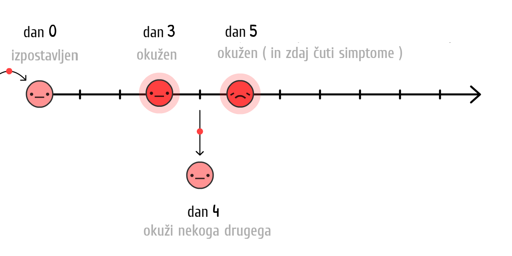
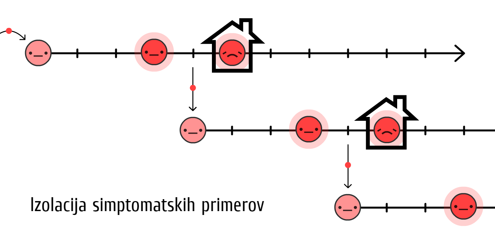
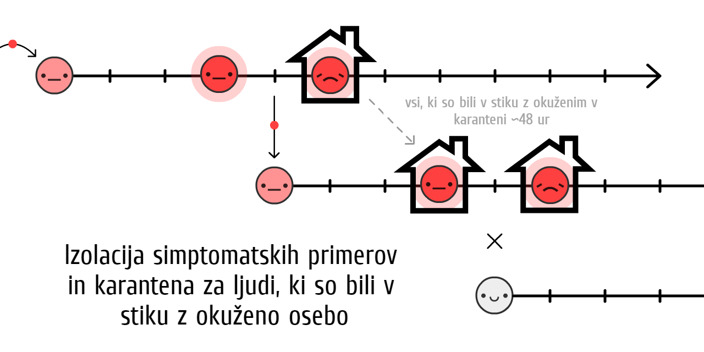

"Az egyetlen dolog, amitől félni kell, az maga a félelem" - ez egy hülye tanács volt.
Jó, ne halmozd fel a WC-papírt; de ha a döntéshozók félnek magától a félelemtől, akkor le fogják kicsinyelni a valódi veszélyeket, hogy elkerüljék a "tömeges pánik" kitörését. Nem magával a félelemmel van baj, hanem azzal, hogy mihez kezdünk a félelmünkkel. A félelem erőt ad, hogy megbirkózzunk a jelenlegi veszélyekkel, és felkészüljünk a későbbi veszélyekre.
Őszintén szólva, mi (Marcel, epidemiológus + Nicky, képek/kód) aggódunk. Lefogadjuk, hogy te is! Ezért a félelmünket mi arra használtuk fel, hogy elkészítsük ezeket a lejátszható szimulációkat, hogy aztán te megértést kovácsolhass a saját félelmedből:
- Az előző hónapok (Alapszintű epidemiológia, SEIR modell, R és R0)
- A következő hónapok (karantén, kontakt-nyomkövetés, maszkok)
- A következő évek (immunitás? ellenszer?)
Ezen ismertető (megjelent: 2020. május 1. Kattints erre a lábjegyzetre!→1) reményt és félelmet hivatott kelteni benned. A COVID-19 olyan módon való legyőzéséhez, hogy közben megóvjuk a szellemi egészségünket és a pénzügyi jólétünket is, a tervek kidolgozásához optimizmusra, a biztonsági tervek kidolgozásához pedig pesszimizmusra van szükségünk. Ahogy Gladys Bronwyn Stern mondta egyszer, "A derűlátó feltalálja a repülőgépet, a borúlátó meg az ejtőernyőt."
Úgyhogy, kösd be magad, egy kis turbulencia jön.

A pilóták repülő-szimulátorokat használnak, hogy megtanulják, hogyan ne zuhanjon le a repülő.
Az epidemiológusok járvány-szimulátorokat használnak, hogy megtanulják, hogyan ne zuhanjon össze az emberiség.
Szóval, készítsünk egy nagyon, nagyon egyszerű "járvány-repülő szimulátort"! Ebben a szimulációban a

Becslések szerint, egy COVID-19 kirobbanás *kezdetén*, a vírus *általában* egy
Mi történik, ha egy csupán 0,001%
Kattints a "Start" gombra, hogy lejátszd a szimulációt! Később újrajátszhatod más beállításokkal: (technikai fenntartások: 3)
Ez az exponenciális növekedési görbe. Lassan indul, aztán elszabadul. Először: "Ó, csak egy influenza", aztán: "Ja, igen, az influenzák nem hagynak hátra maguk után tömeges sírhelyeket gazdag városokban".

De, a szimuláció helytelen. Az exponenciális növekedés szerencsére nem tarthat örökké. Egy dolog, ami megakadályozza a vírus terjedését, az az, ha mások már elkapták:

Minél több a
Hogyan befolyásolja ez a járvány terjedését? Derítsük ki:
Ez az "S-alakú" logisztikai növekedési görbe. Lassan indul, elszabadul, majd újra lelassul.
De, a szimuláció még mindig helytelen. Nem vesszük figyelembe, hogy a
Az egyszerűség kedvéért, vegyük úgy, hogy minden
A COVID-19 esetében azt becslik, hogy az ember általában 10 napig
Ez az exponenciális növekedés ellentéte, az exponenciális csökkenési görbe.
Vajon mi történik, ha együtt szimuláljuk az S-alakú logisztikai növekedést és a gyógyulást?

Derítsük ki.
Piros görbe: aktuális esetek
Szürke görbe: összes eset (aktuális + meggyógyult
És innen származik az a híres görbe! Ez nem egy haranggörbe, de még nem is egy "log-normális" görbe. Nincs elnevezése. De már sokszor találkoztál vele és kérted, hogy laposodjon el.
Ez az SIR Modell,5
(
az "Alapszintű epidemiológia" második legfontosabb fogalma:

MEGJEGYZÉS: A döntéshozókat informáló szimulációk ennél sokkal, sokkal kidolgozottabbak! De az SIR Modellel így is el lehet magyarázni pár általános eredményt, még ha nem is annyira árnyaltan.
Tudod mit? Adjunk hozzá még egy árnyalatot: mielőtt egy

(Ezt a változatot SEIR Modellnek hívják6, amiben az "E":
A COVID-19 esetében azt becslik, hogy ha
Piros + Rózsaszín görbe: aktuális esetek (fertőző
Szürke görbe: összes eset (aktuális + meggyógyult
Nincs nagy változás! A
Miért? Az "Alapszintű epidemiológia" első legfontosabb fogalma miatt:

A "Reprodukciós szám" rövidítése. Ez az átlagos emberszám, amit egy

Egy járványkitörés során az R értékét az immunisabbá válás és a közbeavatkozások befolyásolják.
R0 az R értéke a járványkitörés kezdetén, az immunitás és a közbeavatkozások előtt. Az R0 pontosabban határozza meg maga a vírus erősségét, de így is változó az érték különböző helyeken. Sűrűbben lakott városokban az R0 értéke például magasabb, mint ritkábban lakott vidéki helyeken.
(A legtöbb cikk - sőt, még pár kutatási papír is! - összekeveri az R-t és az R0-t.)
Az idényszerűen előforduló influenza R0 értéke 1,28 körül van8. Ez azt jelenti, hogy egy influenzajárvány kezdetén minden
A COVID-19 R0 értéke becslés szerint 2,29, bár egy, még nem véglegesített tanulmány szerint Wuhanban 5,7(!) volt.10
A szimulációinkban - kezdetben és átlagosan - egy
Játszadozz el ezzel az R0 kalkulátorral, hogy lásd, hogyan függ az R0 értéke a gyógyulási időtől és az újabb megfertőződés idejétől:
De ne feledd, minél kevesebb a
Ha elég ember immunis, akkor R < 1, ezzel a vírus meg lett fékezve! Ez a nyájimmunitás. Influenzák esetében ezt oltóanyaggal érhetjük el. Borzalmas elképzelés "természetes nyájimmunitást" azzal elérni, hogy hagyjuk megfertőződni az embereket. (Nem biztos, hogy azért, amire te gondolsz! Később elmagyarázzuk.)
Na, játsszunk el az SEIR Modellel újra, de most mutatjuk, hogyan változik az R0 és az R értéke, valamint a nyájimmunitás-küszöb:
MEGJEGYZÉS: Az összes esetek száma nem áll meg a nyájimmunitás küszöbénél, hanem túllépi azt! Pontosan akkor lépi át a küszöbét, amikor a csúcsra ér az aktuális esetek száma. (Akárhogy változtatod a beállításokat, mindig így történik - próbáld csak ki!)
Ez azért van, mert amikor több a nem
Ha csak egyetlen dolgot jegyzel meg ebből az ismertetőből, az legyen a következő - a diagram rendkívül összetett, szóval szánj rá egy kis időt, hogy kellően megemészthesd:

Vagyis: NEM szükséges minden egyes fertőzést megelőznünk, de még közel mindegyiket sem, a COVID-19 megállításához!
Ez egy ellentmondás. A COVID-19 rendkívül fertőző, mégis, a megfékezéséhez elég "csak" a fertőzések 60%-át megelőznünk. 60%?! Van olyan iskola, ahol ez 2-es alá. De ha az R0 = 2,5 és ebből leveszünk 61%-ot, az eredmény R = 0,975, ahol az R < 1, vagyis a vírus terjedése megállt! (pontos egyenlet:12)

(Ha azt gondolod, hogy az R0 vagy a többi szám túl alacsony/magas a szimulációnkban, örülünk, hogy megkérdőjelezed a feltevéseinket! Lesz majd egy "Sandbox Mód" az ismertetőnk végén, ahol megadhatsz saját számokat, és kipróbálhatod a szimulációt, hogy mi történik.)
Mindenféle COVID-19 közbeavatkozásnak, amiről hallottál - kézmosás, fizikai távolságtartás, kijárási korlátozás, elzárkózás, kontakt-nyomkövetés, karantén, arcmaszkok, sőt, még a "nyájimmunitás" is - mindnek egyetlen dolog a célja:
Hogy elérjük az R < 1-et.
Na most, használjuk fel a "járvány-repülő szimulátort", hogy kitaláljuk: Hogyan érhetjük el az R < 1-et olyan módon, ami egyúttal megóvja a szellemi egészségünket és a pénzügyi jólétünket?
Készüljetek a kényszerleszállásra...
...rosszabb is lehetett volna. Itt egy párhuzamos univerzum, amit elkerültünk:
0. eset: Egyáltalán nem csinálunk semmit
20 db COVID-19-cel fertőzött emberből körülbelül 1 db intenzív osztályra kerül.13 Egy gazdag országban, mint az Egyesült Államokban, 1 ágy jut az intenzív osztályokon 3400 emberre.14 Vagyis, az Egyesült Államok 20 embert tud ellátni a 3400 egyidőben fertőzött emberből; vagyis, a népesség 0,6%-át.
Még ha több mint megháromszorozzuk is ezt a kapacitást, hogy elérje a 2%-ot, ez történt volna, ha semmit nem teszünk:
Nem valami szép.
Ez áll az Imperial College március 16-i jelentésében: ha nem teszünk semmit, megtelnek az intenzív osztályok és a lakosság több mint 80%-a megfertőződik. (ne feledd: az összes eset száma túllépi a nyájimmunitás küszöbét)
Még ha csak a fertőzöttek 0,5%-a hal is meg - ami nem túlzás, tekintve, hogy tele vannak az intenzív osztályok - egy olyan nagy országban, mint az Egyesült Államok, a 300 millió lakos 80%-ának a 0,5%-a az így is 1,2 millió halott... HA nem teszünk semmit.
(Sok híradó és közösségi mádia jelentette azt, hogy az emberek "80%-a megfertőződik" anélkül, hogy hozzátették volna: "HA NEM TESZÜNK SEMMIT". A félelmet a nézettség növelésére használták fel, nem pedig a megértés terjesztésére. Sóhaj.)
1. eset: A görbe ellaposítása / Nyájimmunitás
A "görbe ellaposítása" tervet javasolta az összes közegészségügyi szervezet, míg az Egyesült Királyság eredeti "nyájimmunitás" tervét univerzálisan leszólták. Ezek ugyanazok a tervek voltak. Az Egyesült Királyság csak rosszul kommunikálta az övét.15
De mindkét tervben volt egy szó szerint végzetes hiba.
Elsőnek nézzük meg a két fő módját a "görbe ellaposításának": kézmosás és fizikai távolságtartás.
A magas jövedelmű országok esetében az alaposabb kézmosás az influenzákat és a megfázásokat kb. 25%-kal csökkenti16, míg egész London lezárása kb. 70%-kal csökkentette a személyes érintkezést17. Szóval tegyük fel, hogy a kézmosás akár 25%-kal, a távolságtartás pedig akár 70%-kal képes lecsökkenteni az R értékét:
Játssz ezzel a kalkulátorral, hogy lásd, hogyan csökkenti R értékét a nem
Na, szimuláljuk le, mi történik egy COVID-19 járvánnyal, ha 2020. márciusától kezdve többet mosnánk kezet, de csak mérsékelten tartanánk a fizikai távolságot; így R alacsonyabb, de még mindig nagyobb mint 1:
Három megjegyzés:
Ez csökkenti az összes eset számát! Még ha nem is lesz R < 1, az R csökkentése így is életeket ment azzal, hogy csökken a nyájimmunitás küszöbének "meghaladása". Sokan úgy gondolják, hogy a "görbe ellaposítása" kiterjeszti az eseteket, de nem csökkenti az összes eset számát. Ez bármilyen "Alapszintű epidemiológia" modellen lehetetlen. De, mivel a híradó "80% feletti fertőződés"-t elkerülhetetlenként jelentett, az emberek úgy gondolták, hogy az összes eset száma ugyanannyi marad, bármit is teszünk. Sóhaj.
A plusz közbeavatkozások miatt, az aktuális esetek száma a nyájimmunitás elérése előtt éri el a csúcsát. Sőt, ebben a szimulációban az összes eset száma csak kicsit haladja meg a nyájimmunitás küszöbét; az Egyesült Királyság tervét! Ezen a ponton R < 1, szóval minden más közbeavatkozást elfelejthetünk, a COVID-19 pedig meg lett fékezve! Nos, egyetlen problémától eltekintve...
Így is megtelnek az intenzív osztályok. Hónapokra. (És ne feledd, már korábban megháromszoroztuk őket az ilyen esetekre.)
Ez volt a másik eredménye az Imperial College március 16-i jelentésének, ami meggyőzte az Egyesült Királyságot, hogy mondjon le eredeti tervéről. A mérséklésre való bármilyen törekvés (ami következményeképp R értéke csökken, de R > 1 marad) kudarcot vall. Az egyedüli lehetőség az elfolytás (ami következményeképp R értéke 1 alá csökken; R < 1).

Vagyis, ne csak "laposítsuk el" a görbét, hanem lapítsuk ki azt. Például úgy, hogy...
2. eset: Több hónapos karantén
Nézzük mi történik, ha kilapítjuk a görbét egy 5 hónapos karanténnal, szinte nullára csökkentjük a
Ó.
Ez a "második hullám", amiről beszélnek. Amint feloldjuk a karantént, az R megint nagyobb lesz, mint 1. Szóval egyetlen hátramaradt
A karantén nem megoldás, csupán újrakezdés.
Szóval, mi lesz? Újra és újra karantént rendelünk el?
3. eset: Időszakos karantén
Ezt a megoldást először az Imperial College március 16-i jelentése javasolta, majd később egy harvardi írás.19
Itt egy szimuláció: (Miután lejátszottad a "rögzített forgatókönyvet", megpróbálhatod te magad időzíteni a karanténokat a csúszkák segítségével, miközben fut a szimuláció! Ne feledd, hogy szüneteltetheted, aztán folytathatod a szimulációt és a sebességét is megváltoztathatod.)
Ez az intenzív osztályok kapacitása alatt tartaná az esetek számát! És sokkal jobb, mint egy 18 hónapos karantén, míg elérhető nem lesz az oltóanyag. Annyit kell tennünk, hogy... bezárkózunk pár hónapra, kimozdulunk pár hónapra, ezt ismételgetve az oltóanyag kibocsájtásáig. (Ha pedig nincs oltóanyag, akkor a nyájimmunitás eléréséig, ami... 2022-ben lesz.)
Nézd, meghúzhatunk egy "intenzív osztály kapacitása" vonalat, de sok fontos dolgot nem tudunk szimulálni. Például:
Szellemi egészség: A magány a depresszió, a szorongás és az öngyilkosság egyik legnagyobb kiváltó kockázati tényezője. És ugyanannyi eséllyel vezethet korai halálhoz, mint a napi 15 cigaretta elszívása.20
Pénzügyi jólét: Ha felteszed a "Mi lesz a gazdasággal?" kérdést, úgy néznek rád, mintha jobban érdekelne a pénz mint az emberélet. De "a gazdaság" nem csak részvényről szól, hanem az emberek képességéről, hogy élelmet és otthont biztosítsanak a szeretteiknek, hogy befektessenek a gyermekeik jövőjébe és élvezzék a művészetet, ételeket, videójátékokat stb.; azokat a dolgokat, amik értelmet adnak az életnek. Különben is, maga a szegénység is szörnyű hatással van a szellemi és fizikai egészségre.
Nem azt mondjuk, hogy nem szabadna újra karanténba vonulnunk! Később megnézzük a "megszakító" karanténokat. Egyszerűen csak nem ideális.
De várjunk... Taiwan és Dél-Korea nem fékezte már meg a COVID-19-et? Méghozzá már 4 hónapja, hosszabb karanténok nélkül?
Hogyan?
4. eset: Tesztelés, nyomon követés, elszigetelés
"Persze, *csinálhattuk* volna azt, amit Taiwan és Dél-Korea a kezdeteknél, de már túl késő. Lekéstünk a kezdetekről."
De pontosan erről van szó! "A karantén nem megoldás, csak újrakezdés"... és új kezdetre van szükségünk.
Hogy megértsük, hogyan fékezte meg Taiwan és Dél-Korea a COVID-19-et, ismernünk kell egy tipikus COVID-19 fertőzés pontos szakaszait21:

Ha az ember csak akkor szigeteli el magát, amikor már tudja, hogy beteg (vagyis érzi a tüneteket), a vírus tovább tud terjedni:

Sőt, a vírus 44%-ban így terjed: tünet előtt! 22
De, amennyiben megtaláljuk és elszigeteljük azokat az embereket, akik tüneteket mutató emberrel érintkeztek a közelmúltban... megfékezzük a terjedést, azzal, hogy egy lépéssel előbbre járunk!

Ezt kontakt-nyomkövetésnek hívják. Ez egy régi ötlet, az Ebola megfékezésére használták, előtte még sosem látott szinten23, ma pedig szerves része annak a módszernek, ahogyan Taiwan és Dél-Korea kordában tartja a COVID-19-et!
(Ezzel a korlátozottan elérhető teszteket is hatékonyabban tudjuk használni; megtalálhatjuk a tünet előtti
A kontaktokat hagyományosan személyes interjúk alapján találják meg, de ez önmagában túl lassú módszer a COVID-19 kb. 48 órás ablakához képest. Ezért van segítségre szükségük a kontakt-nyomkövetőknek. Támogatni kell - NEM pedig lecserélni! - őket kontakt-nyomkövető alkalmazásokkal.
(Ez az ötlet nem az informatika világából ered: először egy csapat oxfordi epidemiológus akart alkalmazást felhasználni a COVID-19 elleni küzdelemben.)
Várjunk, egy alkalmazás, ami nyomon követi, kivel léptél kontaktba?... Ez azt jelenti, hogy bele fog látni a magánéletünkbe, mint a Big Brother?
Szó sincs róla! DP-3T. Epidemiológusok és kriptográfusok egy csapata (köztük van egyikünk, Marcel Salathé is) már egy kontakt-nyomkövető alkalmazáson dolgozik - aminek a forráskódja nyíltan elérhető lesz - és semmit nem árul el a kilétedről, pozíciódról, sem pedig arról, hogy kikkel, vagy hogy mennyi emberrel léptél kontaktba.
Így működik:
(És itt a teljes, eredeti (angol) nyelven).
Olyan hasonló csapatokkal együtt, mint a TCN Protocol24 és az MIT PACT25, arra inspirálták az Apple-t és a Google-t, hogy ezeket az adatvédelmet tisztelő kontakt-nyomkövető alkalmazásokat ültessék be az Android/iOS rendszerekbe.26 (Nem bízol a Google-ben, sem az Apple-ben? Helyes! A rendszer szépsége, hogy nincs szüksége bizalomra!) Nemsokára megkérhet a közegészségügyi hivatalod, hogy tölts le egy alkalmazást. Ha ez az alkalmazás tiszteli az adatvédelmet és nyíltan elérhető a forráskódja, kérlek tedd meg!
De mi van azokkal, akiknek nincsen okostelefonjuk? Vagy a kilincs útján terjedő fertőzéssel? Vagy a "valóban" tünetmentes esetekkel? A kontakt-nyomkövető alkalmazások nem tudják az összes fertőzést megelőzni... és ezzel nincs is baj! Nem kell megelőznünk az összes fertőzést, elég a 60% feletti érték ahhoz, hogy az R < 1-et elérjük.
(Megjegyzés a tünet előtti és valóban tünetmentes eset különbségéről. A "valóban" tünetmentes eset ritka:27)
A tünetes esetek elszigetelése akár 40%-kal, a tünet előtti/tünetmentes kontaktjaik karanténba vonulása pedig akár 50%-kal csökkentené az R értékét28:
Így, még 100%-os kontakt-elszigetelés nélkül is elérhetjük az R < 1-et karantén nélkül! Ez sokkal jobb a szellemi egészésgünknek és a pénzügyi jólétünknek. (Akiknek el kell szigetelődniük, őket a kormányoknak kellene támogatniuk; tesztekkel, az állás védelmével, fizetett szabadsággal stb. Ez még így is jóval olcsóbb, mint az időszakos karantén.)
Ezután megtartjuk az R < 1-et, amíg meg nem lesz az oltóanyag, ami a fogékony
(Megjegyzés: ez a kalkulátor úgy tesz, mintha 100%-os hatékonyságúak lennének az oltóanyagok. Ne feledd, hogy a valóságban kompenzálni kell azzal, hogy többet oltasz be a "nyájimmunitás"-nál, hogy ténylegesen elérd a nyájimmunitást.)
Oké, elég a beszédből. Itt egy szimuláció a következőkről:
- Néhány hónapos karantén, mielőtt...
- Átválthatunk a "Tesztelés, nyomon követés, elszigetelés" módszerre, mielőtt...
- Beolthatunk elég embert, amivel...
- Győzünk.
Ennyi! Így végzünk kényszerleszállást ezzel a repülővel.
Így győzzük le a COVID-19-et.
...
De mi van, ha mégis rosszra fordulnak a dolgok? Már így is szörnyen rosszra fordultak a dolgok. Ez félelem, ami hasznos! A félelem arra ösztönöz, hogy biztonsági tervet ötöljünk ki..
A borúlátó feltalálja az ejtőernyőt.
4. eset (extra): Maszkot mindenkinek, nyár, megszakítók
Mi van, ha az R0 jóval nagyobb, mint gondoltuk és sem a fenti közbeavatkozások, de még a mérsékelt távolságtartás sem elegendő ahhoz, hogy elérjük az R < 1-et?
Ne feledd, még ha nem is tudjuk elérni az R < 1-et, az R érték csökkentése ettől még mérsékeli az összes eset csúcspontját, életeket mentve ezzel. De ettől még az R < 1 az ideális, szóval itt van még pár módszer, amivel csökkenthetjük az R értékét:
Maszkot mindenkinek:
"Várj, azt hittem, hogy a maszkok nem óvnak meg a fertőzéstől."
Igazad van. A maszkok nem téged óvnak a fertőzéstől29... hanem másokat óvnak attól, hogy megfertőzd őket.

Vagyis: a beteg által viselt orvosi maszkok 70%-kal csökkentik a megfázás és az influenza vírusokat az aeroszolban.30 A fertőzés 70%-os csökkentése pedig olyan hatásos lenne, mint egy karantén!
Viszont nem ismerjük pontosan a maszkok COVID-19-re való hatását. A tudományos világban csak akkor szabadna közzétenned egy eredményt, ha 95%-ban biztos vagy benne. (...szabadna.31) A maszkok, 2020. május 1-jei álláspont szerint, kevesebb, mint "95%-ig biztosak".
Viszont a járványok olyanok, mint a póker. Ha csak akkor teszel tétet, amikor 95%-ig biztos vagy a dologban, valószínűleg mindent elvesztesz. Ahogy egy közelmúltban megjelent, maszkokról szóló cikk megjegyzi a British Medical Journalban,32 bizonytalanság idején muszáj elemeznünk, hogy milyen áron milyen hasznot érhetünk el. Pl.:
Ár: Az otthon készült maszkok (amik kb. 2/3 annyira hatékonyak, mint az orvosi maszkok33), nagyon olcsóak. Az orvosi maszkok drágábbak, de még mindig elég olcsóak.
Haszon: Még akkor is, ha 50/50 az esélye, hogy az orvosi maszk 0%-kal vagy 70%-kal csökkenti a fertőzést, az átlag "várható érték" még mindig 35%. Mint egy fél-karantén! Saccoljuk meg, hogy az orvosi maszkok akár 35%-kal csökkentik az R értékét, beleszámítva a bizonytalanságunkat. (Most is megkérdőjelezheted a feltevéseinket a csúszkák húzogatásával.)
(További érvelések a maszkok mellett/ellen:34)
A maszkok önmagukban nem fogják elhozni az R < 1-et. De ha a kézmosás és a "Tesztelés, nyomon követés, elszigetelés" csak R = 1,10-ig juttat el minket, akkor, ha az emberek csupán 1/3-a maszkok viselne, máris átbillentené az R értékét 1 alá, így meg lenne fékezve a vírus!
Nyár:
Oké, ez nem egy olyan "közbeavatkozás", amit irányítani tudunk, de segíteni fog! Néhány sajtóorgánum azt jelenti, hogy a nyár semmit nem fog tenni a COVID-19-cel. Félig igazuk van: a nyár nem fogja elérni az R < 1-et, de csökkenteni fogja az R értékét.
A COVID-19 esetében minden extra 1° Celsius (2,2° Fahrenheit) hatására 1,2%-ot csökken az R értéke.35 New Yorkban a téli-nyári hőmérséklet-különbség 15°C (60°F), így a nyár 18%-kal csökkenteni fogja az R értékét.
A nyár önmagában nem fogja levinni 1 alá az R értékét, de ha korlátozottak az erőforrásaink, tartalékolhatjuk a nyári közbeavatkozásokat télre.
Egy "megszakító" karantén:
Ha pedig mindez még mindig nem elég, hogy elérjük az R < 1-et... elrendelhetünk még egy karantént.
De nem kellene ismételgetnünk a 2 hónap elzártság / 1 hónap kimozdulás taktikáját újra és újra! Mivel az R értéke alacsonyabb, már csak egy vagy kettő "megszakító" karanténra lenne szükségünk, mielőtt elérhetővé válik az oltóanyag. (Szingapúrban ez szükségszerűvé vált, "annak ellenére", hogy már 4 hónapja kordában tartották a COVID-19-et. Ez nem kudarc, ez szükséges a sikerhez.)
Itt egy szimuláció, egy "lusta ügy" esete:
- Karantén, majd
- Egy mérsékelt szintű higiénia és "Tesztelés, nyomon követés, elszigetelés", egy kis "Maszkot mindenkinek" dologgal megfűszerezve, majd...
- Még egy "megszakító" karantén, mielőtt megtalálják az oltóanyagot.
Arról nem is beszélve, mennyi mindennel tudná a többi közbeavatkozás tovább csökkenteni az R értékét:
- Utazási korlátozások
- Testhőmérséklet-ellenőrzés az áruházaknál és az iskoláknál
- Nyilvános helyek alapos takarítása
- Kéz helyett lábbal való köszönés
- És minden más, amit az emberi találékonyság kiötöl
. . .
Reméljük, hogy ezek a tervek reménnyel töltenek el.
Még ha egy pesszimista forgatókönyv szerint alakul is a helyzet, akkor is lehetséges legyőzni a COVID-19-et, úgy, hogy közben megóvjuk a szellemi egészségünket és a pénzügyi jólétünket. A karantént használjuk "újraindító gombként", tartsuk meg az R < 1-et eseti elszigeteléssel, adatvédelmet tisztelő kontakt-nyomkövető alkalmazásokkal és legalább ruhából készült maszkokkal... aztán visszatérhet az élet a nomális-szerű kerékvágásba!
Talán kiszáradnak a kezeid. De lesz lehetőséged randira menni! Lesz lehetőséged moziba menni a barátaiddal, hogy megnézzétek a legújabb hollywoodi pénzlehúzást. Lesz lehetőséged betérni egy könyvtárba, ahol megfigyelheted az embereket és élvezeted lelheted benne, hogy egyszerűen mindenki örül annak, hogy életben van.
Még a legrosszabb forgatókönyv esetén is... az élet kitart.
Na akkor, készítsünk terveket pár, a legrosszabbnál is rosszabb esetre. Vízen landoltunk, fogd a mentőmellényed és kérlek, kövesd a fényt a vészkijárathoz:
Elkapod a COVID-19-et, majd meggyógyulsz. Vagy megkapod a COVID-19 oltást. Akárhogy is, immunissá váltál...
...de meddig?
- A COVID-19 legközelebb a SARS-hoz áll, ami a túlélőinek 2 évnyi immunitást adott.36
- Az a koronavírus, ami a "mezei" megfázást okozza, 8 havi immunitást ad.37
- Vannak olyan emberekről szóló jelentések, akik kigyógyultak a COVID-19-ből, majd újra pozitív lett a teszjük, de nem világos, hogy ez hamis eredmény-e.38
- A majmokról készült egy független szakértő által még nem értékelt tanulmány legalább 28 napnyi immunitást mutatott ki a COVID-19 koronavírus ellen.39
De az emberekben előforduló COVID-19-et illetően, 2020. május 1-jei álláspont szerint a "meddig tart" a nagy rejtély.
Ezekre a szimulációkra adjunk mondjuk 1 évet.
Itt egy szimuláció, ami 100%
Az exponenciális romlás visszatér!
Ez a SEIRS Modell. A végső "S" újfent a

Szimuláljunk egy COVID-19 kitörést, 10 éven keresztül, közbeavatkozások nélkül... ha az immunitás csak egy évig tart:
Az előző szimulációkban csak egy intenzív osztályokat túltelítő eset volt. Most több ilyen történt és a
R = 1, helyhez kötött.
Szerencsére, mivel a nyár csökkenti az R értékét, javulni fog a helyzet:
Ó.
A várakozásokkal ellentétben, a nyár ront a kiugrásokon, sőt, rendszeressé teszi őket! Ez azért van, mert a nyár csökkenti az új
Szerencsére erre elég egyszerű a megoldás; oltsuk be az embereket minden ősszel/télen, ahogy az influenza-oltással is tesszük:
(Miután lejátszottad a rögzített szimulációt, próbálkozz meg saját oltási kampányokkal! Ne feledd, hogy bármikor tudod szüneteltetni és folytatni a szimulációt.)
De itt jön az ijesztőbb kérdés:
Mi van, ha még évekig nem lesz oltóanyag? Mi van, ha soha nem lesz oltóanyag?
Csak hogy tisztázzuk: ez valószínűtlen. A legtöbb epidemiológus 1-2 éven belülre várja az oltóanyagot. Igaz, semelyik másik koronavírus ellen nem volt még oltóanyag, de ez azért volt, mert a SARS-t gyorsan elpusztították, a "mezei" megfázás pedig nem érte meg a befektetést.
Pár fertőző betegség kutató így is aggodalmát fejezte ki. Mi lesz, ha nem tudunk eleget előállítani?40 Mi lesz, ha elsietjük és nem lesz biztonságos?41
Még az "oltóanyag nélküli" esetben is van három kiutunk. A legrosszabbtól kezdve:
1) Csináljuk az időszakos vagy laza R < 1 közbeavatkozásokat, hogy elérjük a "természetes nyájimmunitást". (Vigyázat: ez sok halállal és sérült tüdővel jár. Ráadásul nem fog működni, ha az immunitás nem marad meg.)
2) Csináljuk az R < 1 közbeavatkozásokat, örökké. Egyszerűen mindennapivá válik a kontakt-nyomkövetés és a maszkviselés a COVID-19 megjelenése utáni viágban, ahogy az STI tesztek és az óvszer viselése megszokássá vált a HIV megjelenése utáni világban.
3) Csináljuk az R < 1 közbeavatkozásokat, amíg ki nem fejlesztünk olyan kezeléseket, amiknek köszönhetően a COVID-19-es esetek sokkal, sokkal kisebb eséllyel szorulnak kritikus ellátásra. (Most is ezt kellene tennünk!) Tizedjére csökkenteni az intenzív osztályok kihasználtságát ugyanaz, mintha tízszeresére növelnénk az intenzív osztályok kapacitását:
Itt egy szimuláció, amiben nincs megmaradó immunitás, nincs oltóanyag, de még csak közbeavatkozások sincsenek; csak fokozatosan növeljük a kapacitást, hogy túléljük a hosszútávú kiugrásokat:
Még a legrosszabbnál is rosszabb esetben is... az élet kitart.
. . .
Talán szeretnéd megkérdeőjelezni a feltételezéseinket, és kipróbálni különböző R0 értékeket vagy számokat. Vagy kirpbálnád a saját kombinációidat a közbeavatkozási terveket illetően!
Itt egy (opcionális) Sandbox Mód, amiben minden elérhető (görgess lejjebb, hogy lásd az összes csúszkát). Szimulálj és játszadozz a beállításokkal kedved szerint:
Az alap "járvány-repülő szimulátor" rengeteget tanított nekünk. A segítségével meg tudtunk válaszolni kérdéseket az elmúlt hónapokról, a következő hónapokról és a következő évekről.
Úgyhogy végül, térjük vissza...
Elsüllyedt a repülő. A mentőcsónakokon tülekedünk. Ideje szárazföld után nézni.42
Epidemiológusok és döntéshozók csapatai (baloldali, jobboldali, és több-párti) jutottak egyetértésre a COVID-19 legyőzését illetően, miközben a mi életünket és szabadságunkat védték.
Itt van a terv nagyvonalakban, egy pár (közös megegyezésnek kevésbé örvendő) biztonsági tervvel együtt:

Szóval, mit jelent ez most SZÁMODRA?
Mindenki: Tartsátok tiszteletben a karantént, hogy minél hamarabb túljuthassunk az első Fázison. Mossatok kezet. Készítsetek saját maszkokat. Töltsétek le az adatvédelmet tisztelő kontakt-nyomkövető alkalmazást, amint elérhetővé válik a következő hónapban. Őrizzétek egészségetek, mind fizikailag, mind szellemileg! És írjatok a helyi döntéshozóitoknak, hogy emeljék fel a valagukat és...
Döntéshozók: Hozzatok olyan törvényeket, amik támogatják azokat, akiknek el kell szigetelődniük. Vegyetek fel több kézi kontakt-nyomkövetőt, akiket segítenek az adatvédelmet tisztelő kontakt-nyomkövető alkalmazások. Fordítsatok több forrást azokra a dolgokra, amikből hiányunk van, például...
Alkotók: Alkossatok teszteket. Készítsetek ventilátorokat. Készítsetek személyes védőfelszerelést a kórházaknak. Alkossatok teszteket. Készítsetek maszkokat. Készítsetek alkalmazásokat. Hozzatok létre vírusölő, betegséget megelőző szert, és egyéb kezeléseket amik nem oltóanyagok. Készítsetek oltóanyagokat. Alkossatok teszteket. Alkossatok teszteket. Alkossatok teszteket. Adjatok reményt.
Ne kicsinyeljétek le a félelmet a remény érdekében. A félelmünknek össze kell dolgoznia a reményünkkel, mint a repülőgépek és az ejtőernyők feltalálóinak. A szörnyű eshetőségekre felkészülve alkotunk meg egy reményteljes jövőt.
Az egyetlen dolog, amitől félni kell, az az a gondolat, miszerint csak magától a félelemtől kell félni.
-
Ezekben a lábjegyzetekben források, linkek, vagy b√≥nusz kommentárok lesznek. Mint ez! ↩
Ez az útmutató 2020. május 1-jén jelent meg. Sok részlet idővel elavulttá fog válni, de biztosak vagyunk benne, hogy ez az útmutató fedezi a lehetséges jövőképek 95%-át, valamint hogy az "Alapszintű epidemiológia" örökre hasznos marad.
-
"Az intervallum k√∂z√©p√©rt√©ke 3,96 nap (95% megb√≠zhat√≥sági intervallum, 3,53-4,39 nap) volt". Du Z, Xu X, Wu Y, Wang L, Cowling BJ, Ancel Meyers L (Megjegyz√©s: Az el≈ëzetesen kiadott cikkek nem tekintend≈ëk v√©gleges változatnak) ↩
-
Ne feledd: ezek nagyon leegyszer≈±s√≠tett szimuláci√≥k, táj√©koztatási c√©lt szolgálnak. ↩
Egy egyszerűsítés: Amikor azt mondod a szimulációnak, hogy "X naponta fertőződjön meg 1 új ember", valójában a fertőzöttek számát növeli 1/X-szel naponta. Ugyanez igaz a szimulációk későbbi beállításaira; az "X naponta gyógyuljon meg" valójában csökkenti a fertőzöttek számát 1/X-szel naponta.
Ez nem ugyanaz, de megközelítőleg elég pontos, a tájékoztatás céljából pedig átláthatóbb így, mintha kézzel állítgatnánk a fertőzés/gyógyulás arányait.
-
"A fert≈ëz≈ë id≈ëszak mediánja [...] 9,5 nap volt." Hu, Z., Song, C., Xu, C. et al Igen, tudjuk, hogy a "medián" nem ugyanaz, mint az "átlag". Az egyszer≈±s√≠tett táj√©koztatás c√©ljáb√≥l el√©g k√∂zeli. ↩
-
További technikai informáci√≥ az SIR Modellr≈ël: the Institute for Disease Modeling and Wikipedia ↩
-
További technikai informáci√≥ az SEIR Modellr≈ël: the Institute for Disease Modeling and Wikipedia ↩
-
"Ha egy a korai COVID-19 esetekben v√©gzett tanulmány alapján azt felt√©telezz√ºk, hogy a lappangási id≈ë átlagosan 5,2 napra oszlik el, az arra enged k√∂vetkeztetni, hogy a fert≈ëz≈ë állapot 2,3 nappal a t√ºnetek megjelen√©se el≈ëtt áll be (95% megb√≠zhat√≥sági intervallum, 0,8-3,0 nap) ." (vagyis: Felt√©ve, hogy a t√ºnetek az 5. napon jelennek meg, a fert≈ëz≈ë állapot 2 nappal korábban, a 3. napon áll be) He, X., Lau, E.H.Y., Wu, P. et al. ↩
-
"Az id√©nyszer≈±en el≈ëfordul√≥ influenza medián R √©rt√©ke 1,28 volt (IQR: 1,19-1,37)" Biggerstaff, M., Cauchemez, S., Reed, C. et al. ↩
-
"A 2019-nCoV alap reprodukci√≥s R0 számát k√∂r√ºlbel√ºl 2,2-re becs√ºlt√ºk (90% nagy s≈±r≈±s√©g≈± intervallum: 1,4-3,8)" Riou J, Althaus CL. ↩
-
"Szám√≠tásaink szerint az R0 medián √©rt√©ke 5,7 (95% megb√≠zhat√≥sági intervallum, 3,8-8,9)" Sanche S, Lin YT, Xu C, Romero-Severson E, Hengartner N, Ke R. ↩
-
Ez akkor igaz, ha √∫gy vessz√ºk, hogy "fert≈ëz≈ë id≈ëszakban" v√©gig ugyanannyira fert≈ëz≈ë egy ember. Ahogy mondtam, az egyszer≈±s√≠t√©sek a táj√©koztatás c√©lját szolgálják. ↩
-
Ne feledd: R = R0 * megengedett fertőzések aránya.
Azt se feledd, hogy:
megengedett fert≈ëz√©sek aránya = 1 - megáll√≠tott fert≈ëz√©sek aránya. ↩Vagyis, az R < 1 el√©r√©s√©hez sz√ºks√©ges, hogy:
R0 * MegengedettFertőzések < 1.Vagyis, MegengedettFertőzések < 1/R0
Vagyis, 1 - MegállítottFertőzések < 1/R0
Vagyis, MegállítottFertőzések > 1 - 1/R0
Vagyis, meg kell állítanod több mint 1 - 1/R0 -t a fertőzésekből, hogy R < 1 legyen és megfékezd a vírust!
-
"2020. február 12. √©s március 16. k√∂zt, az Egyes√ºlt √Ållamokban a COVID-19-cel fert≈ëz√∂tt emberek azon százal√©ka, ahol a szem√©ly intenz√≠v osztályra ker√ºlt, √©vcsoportok alapján". Az √∂sszes COVID-19-cel fert≈ëz√∂tt beteg 4,9-11,5%-át volt sz√ºks√©ges s√ºrg≈ëss√©gi osztályra száll√≠tani. Alacsony szinten is számolva, ez 5%, vagyis minden 20-b√≥l 1. Megjegyz√©s: ez az Egyes√ºlt √Ållamok korcsoport-strukt√∫rájára jellemz≈ë; más, id≈ësebb lakossággal rendelkez≈ë országokban magasabb, m√≠g fiatalabb lakossággal rendelkez≈ë országokban alacsonyabb ez az arány. ↩
-
"Az intenz√≠v osztályokon l√©v≈ë ágyak száma = 96 596". Forrás: the Society of Critical Care Medicine Az Egyes√ºlt √Ållamok n√©pess√©ge 328 200 000 volt 2019-ben. 96 596 : 328 200 000 = kb. 1 : 3400. ↩
-
"Azt mondja, hogy a c√©l megegyezik a t√∂bbi ország√©val: a fert≈ëz√©sek terjed√©s√©nek elfojtásával ellapos√≠tani a g√∂rb√©t. Ennek k√∂vetkezm√©nyek√©pp, a nemzetben kialakulhat a nyájimmunitás; ez egy mell√©khatás, nem c√©l. [...] A kormány koronav√≠rus akci√≥terve, ami online is el√©rhet≈ë, egyáltalán nem eml√≠ti a nyájimmunitást." ↩
Forrás: The Atlantic article by Ed Yong
-
"Nyolc hitelk√©pes tanulmány arra jutott, hogy a k√©zmosás 6-44%-kal cs√∂kkentette a l√©g√∫ti megbeteged√©sek kockázatát [√∂sszes√≠tett √©rt√©k: 24% (95% megb√≠zhat√≥sági intervallum, 6-40%)]." Az √∂sszes√≠tett √©rt√©ket felkerek√≠tett√ºk 25%-ra ezekben a szimuláci√≥kban az egyszer≈±s√©g kedv√©√©rt. Rabie, T. and Curtis, V. Megjegyz√©s: ez a meta-anal√≠zis azt √≠rja, a k√©zmosás-tanulmányok min≈ës√©ge (a magas j√∂vedelm≈± országokban legalábbis) borzaszt√≥. ↩
-
"Egy√©ni megfigyel√©s során 73%-os cs√∂kken√©st számoltunk az átlagos napi kapcsolatteremt√©sben. Ez el√©g lesz ahhoz, hogy az R0 karant√©n el≈ëtti 2,6-os √©rt√©k√©t lecs√∂kkents√ºk a karant√©n alatt 0,62-re (0,37 - 0,89)". Mi 70%-ra kerek√≠tett√ºk le ezekben a szimuláci√≥kban az egyszer≈±s√©g kedv√©√©rt. Jarvis and Zandvoort et al ↩
-
Nem lenne ez a torz√≠tás ha az R-t logaritmikus skálán ábrázolnánk... de ehhez el kellene magyaráznunk a logaritmikus skálát. ↩
-
"Más k√∂zbeavatkozások hiányában, a távolságtartás siker√©nek fontos m√©rc√©je az, hogy t√∫lterhel≈ëdnek-e a kritikus ellátás kapacitásai. Ennek elker√ºl√©se √©rdek√©ben 2022-be ny√∫l√≥ meghosszabb√≠tott vagy id≈ëszakos távolságtartásra lehet sz√ºks√©g." Kissler and Tedijanto et al ↩
-
Lásd: 6. ábra Holt-Lunstad & Smith 2010. Persze √©rdemes k√©tkedve tekinteni erre az √∂sszef√ºgg√©sre. De be kell √©rned ezzel a bizony√≠tással, hacsak nem akarsz v√©letlenszer≈±en kiválogatni pár embert, akiknek aztán √©let√ºk v√©g√©ig magányosnak kell lenni√ºk, hogy megbizonyosodj r√≥la. ↩
-
√Åtlagosan 3 nap m√∫lva áll be a fert≈ëz≈ë állapot: "Ha egy a korai COVID-19 esetekben v√©gzett tanulmány alapján azt felt√©telezz√ºk, hogy a lappangási id≈ë átlagosan 5,2 napra oszlik el, az arra enged k√∂vetkeztetni, hogy a fert≈ëz≈ë állapot 2,3 nappal a t√ºnetek megjelen√©se el≈ëtt áll be (95% megb√≠zhat√≥sági intervallum, 0,8-3,0 nap) ." (vagyis: Felt√©ve, hogy a t√ºnetek az 5. napon jelennek meg, a fert≈ëz≈ë állapot 2 nappal korábban, a 3. napon áll be) He, X., Lau, E.H.Y., Wu, P. et al. ↩
Átlagosan 4 nap múlva fertőzünk meg valaki mást: "Az átlag-intervallum 3,96 nap volt (95% megbízhatósági intervallum, 3,53-4,39 nap)" Du Z, Xu X, Wu Y, Wang L, Cowling BJ, Ancel Meyers L
Átlagosan 5 nap múlva érezzük a tüneteket: "Az átlag lappangási idő kb. 5,1 nap (95% megbízhatósági intervallum, 4,5-5,8 nap)" Lauer SA, Grantz KH, Bi Q, et al
-
"Becsl√©seink szerint a szekunder esetekben a fert≈ëz√©s 44%-a (95% megb√≠zhat√≥sági intervallum, 25-69%) a fert≈ëz≈ë ember t√ºnet-el≈ëtti id≈ëszakában t√∂rt√©nt" He, X., Lau, E.H.Y., Wu, P. et al ↩
-
"A kontakt-nyomk√∂vet√©s kritikus k√∂zbeavatkozás volt Lib√©riában; t√∂rt√©nelm√ºnk egyik legnagyobb kontakt-nyomk√∂vet√©si er≈ëfesz√≠t√©se volt járvány id≈ëszakában." Swanson KC, Altare C, Wesseh CS, et al. ↩
-
Temporary Contact Numbers (√Åtmeneti Kontakt Számok), egy decentralizált, az adatv√©delmet tisztel≈ë kontakt-nyomk√∂vet≈ë protokoll ↩
-
PACT: Private Automated Contact Tracing (Privát Automatizált Kontakt-Nyomk√∂vet√©s) ↩
-
Az Apple √©s a Google beszáll a COVID-19 kontakt-nyomk√∂vet≈ë technol√≥giába . Megjegyz√©s: nem ≈ëk maguk √≠rják az alkalmazásokat, csak lehet≈ëv√© teszik, hogy a rendszereik támogassák ezeket az alkalmazásokat. ↩
-
Rengeteg h√≠r, √©s ≈ëszint√©n sz√≥lva, sok kutatás sem tesz k√ºl√∂nbs√©get a "nem mutatott t√ºneteket, amikor kerest√ºk ≈ëket" (t√ºnet el≈ëtti) √©s a "soha nem mutott t√ºneteket" (val√≥ban t√ºnetmentes) esetek k√∂zt. Csak √∫gy lehetne megmondani a k√ºl√∂nbs√©get, hogy k√©s≈ëbb √∫jra megvizsgáljuk az eseteket. ↩
Pontosan ezt tette ez a tanulmány. (Megjegyzés: "Az előzetesen kiadott cikkek nem tekintendők végleges változatnak.") Egy Dél-Koreában található, COVID-19 járvány súlytotta telefonközpontban "csak 4 (1,9%) ember maradt tünetmentes a karantén 14 napja alatt, és a családi kontaktjaik egyikőjüke sem lett szekunder módon fertőzött."
Ez azt jelenti, hogy a "valóban tünetmentes" esetek ritkák, és fertőzést kapni egy valóban tünetmentes embertől, még ennél is ritkább!
-
Ugyanabban az oxfordi tanulmányban, ami el≈ësz√∂r javasolta az alkalmazások használatát a COVID-19 elleni k√ºzdelemben: Luca Ferretti & Chris Wymant et al 2. ábra. Amennyiben R0 = 2,0, a k√ºl√∂nb√∂z≈ë esetek √≠gy "járulnak hozzá" az √©rt√©khez: ↩
- Tünetes: R = 0,8 (40%)
- Tünet előtti: R = 0,9 (45%)
- Tünetmentes: R = 0,1 (5%, bár ez bizonytalan, lehet jóval alacsonyabb is)
- Környezeti tényezők, pl.: kilincsek: R = 0,2 (10%)
Adjuk össze tünet előtti és a tünetmentes kontaktokat (45% + 5%), amivel kijön az R 50%-a!
-
"Ezen seb√©szeti maszkok egyike sem mutatott megfelel≈ë sz≈±r≈ëteljes√≠tm√©nyt, valamint olyan arcilleszt√©si jellemz≈ëik sincsenek, amik l√©gz√©sv√©d≈ë eszk√∂znek min≈ës√≠thetn√©k ≈ëket." Tara Oberg & Lisa M. Brosseau ↩
-
"Az aeroszol sokszoroz√≥dási számaiban megfigyelt átlag 3,4-szeres cs√∂kken√©s [70%-os cs√∂kken√©s], egybe√∂ltve a nagy cseppek sz√≥r√≥dásának majdnem teljes eliminálásával, amit Johnson et al. demonstráltak, azt sugallja, hogy a fert≈ëz√∂ttek által viselt seb√©szi maszkok klinikailag jelent≈ës hatással lehetnek a fert≈ëz√©sre." Milton DK, Fabian MP, Cowling BJ, Grantham ML, McDevitt JJ ↩
-
Ha olvasta ezt a mondatot egy val√≥di tud√≥s, most biztos s√≠r a nevet√©st≈ël. Lásd: p-hacking, the replication crisis) ↩
-
"Ideje alkalmazni az el≈ëvigyázatosság elv√©t" Trisha Greenhalgh et al [PDF] ↩
-
Davies, A., Thompson, K., Giri, K., Kafatos, G., Walker, J., & Bennett, A 1. táblázat: Egy 100%-os pamutp√≥l√≥ sz≈±r√©si k√©pess√©ge k√∂r√ºlbel√ºl 2/3-a egy seb√©szi maszk sz≈±r≈ëk√©pess√©g√©nek. Ezt k√©t bakteriális aeroszollal tesztelt√©k. ↩
-
"Meg kell hagynunk a k√©szleteket a k√≥rházaknak." Teljess√©ggel egyet√©rtek. De ez inkább a maszk gyártás, nem pedig a maszk tartal√©kolás mellett sz√≥l√≥ √©rv. Addig is, k√©sz√≠thet√ºnk ruháb√≥l maszkot. ↩
"Nehéz helyesen viselni őket." A WHO Útmutatója szerint kezet mosni is nehéz (komolyan, "3. lépés: jobb tenyér a bal dorsum fölé"?!) ennek ellenére javasoljuk a kézmosást, mert a tökéletlenség még mindig jobb, mint a semmi.
"Óvatlanabbak lesznek tőle az emberek a kézmosást és a távolságtartást illetően." Persze, a biztonsági öveknek köszönhetően pedig figyelmen kívül hagyják az emberek a stop táblákat, a fogselyem használata miatt meg köveket esznek. Most komolyan, szerintünk pont az ellenkezője áll fenn: a maszkok állandó fizikai emlékeztetők, hogy legyünk óvatosak; Kelet-Ázsiában pedig a maszk a szolidaritás szimbóluma!
-
"Egy fok-Celsius h≈ëm√©rs√©kletn√∂veked√©s [...] 0,0225-tel cs√∂kkenti az R √©rt√©k√©t" √©s "ennek a 100 városnak az átlagos R √©rt√©ke 1,83". 0,0225 √∑ 1,83 = kb. 1,2%. Wang, Jingyuan and Tang, Ke and Feng, Kai and Lv, Weifeng ↩
-
"SARS-specifikus antitestek átlag 2 √©vig maradtak fenn [...] Ezáltal, a SARS-betegek talán √∫jra fog√©konyak lehetnek 3 √©v után." Wu LP, Wang NC, Chang YH, et al. "Sajnos" soha nem fogjuk tudni, milyen hosszan tartott volna a SARS elleni immunisság, mivel olyan gyorsan kipuszt√≠tottuk. ↩
-
"Nem találtunk jelent≈ës k√ºl√∂nbs√©get a legalább egyszeri pozit√≠v teszteredm√©ny val√≥sz√≠n≈±s√©ge √©s a b√©ta-koronav√≠rus HKU1 √©s OC43 √∫jb√≥li megjelen√©s√©nek val√≥sz√≠n≈±s√©ge k√∂zt 34 h√©ttel a betegfelv√©tel/els≈ë fert≈ëz√©s után." Marta Galanti & Jeffrey Shaman (PDF) ↩
-
"Miután valaki legy≈ëz egy v√≠rust, a v√≠rus r√©szecsk√©i egy ideig a testben szoktak maradni. Ezek nem okozhatnak fert≈ëz√©st, de el≈ëid√©zhetnek pozit√≠v teszteredm√©nyt." from STAT News by Andrew Joseph ↩
-
Forrás: Bao et al. Megjegyz√©s: Ez a cikk egy el≈ëzetes nyomtatás, amit (m√©g) nem igazoltak f√ºggetlen szak√©rt≈ëk. K√ºl√∂nben is, hogy nyomat√©kos√≠tsam: csak 28 nappal k√©s≈ëbb tesztelt√©k az √∫jrafert≈ëz≈ëd√©st. ↩
-
"Ha meglesz a koronav√≠rus ellenszere, k√©pes lesz-e a világ el≈ë√°ll√≠tani eleget?" by Roxanne Khamsi, on Nature ↩
-
"Ne siess√ºk el a COVID-19 olt√≥anyag kiadását, [...] megfelel≈ë biztonsági √≥vint√©zked√©sek el≈ëtt" by Shibo Jiang, on Nature ↩
-
Szárazf√∂ld metafora Marc Lipsitch & Yonatan Grad, on STAT News ↩
 KÖZKINCS
KÖZKINCS